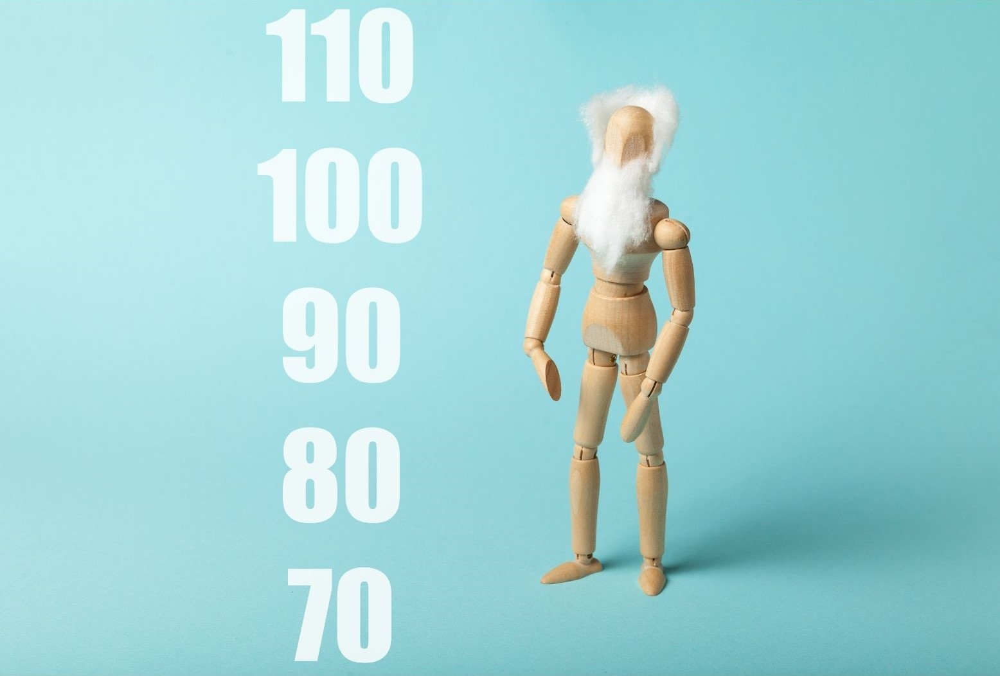

Olympic Games are international sport events held every four years. This event brings together many athletes drawn from different countries across the globe. In this project, I explore the Olympics dataset since the first modern Olympics which was held in Athens in 1896. I seek to find out how different countries performed.


In this project, we are exploring the World Happiness Data to try to find out what are the factors that lead to a happy society. The data is provided by Kaggle.

In this project, I perform sentiment anaysis of Amazon Fine Food Reviews using Python.

This is a collection of Data Visualization projects that I have worked on.
I use python and linear programming to create an optimal Fantasy Premier League Team.
I analyze the sentiments of twitter users in Kenya to establish their thoughts on a trending topic in the country.

We analyze some factors that affect the life expectancy of a person. We also develop a regression model to predict the life expectancy of a person